Mission brief
Seven summers of Landsat 8/9 Collection-2 thermal imagery (Mar–Jun 2019–2025), composited over Greater Chennai at 30 m: 2,001,080 valid pixels, of which 1.57 M are land after masking the Bay of Bengal and inland water (21.7 % of the AOI). The Ennore–Manali industrial belt anchors the environmental-justice case; the airport anchors the aerospace module; Guindy NP and Pallikaranai marsh serve as cool references.
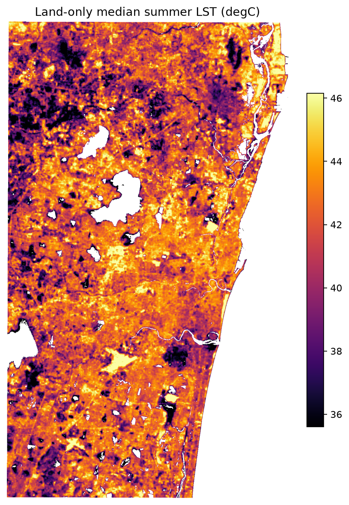
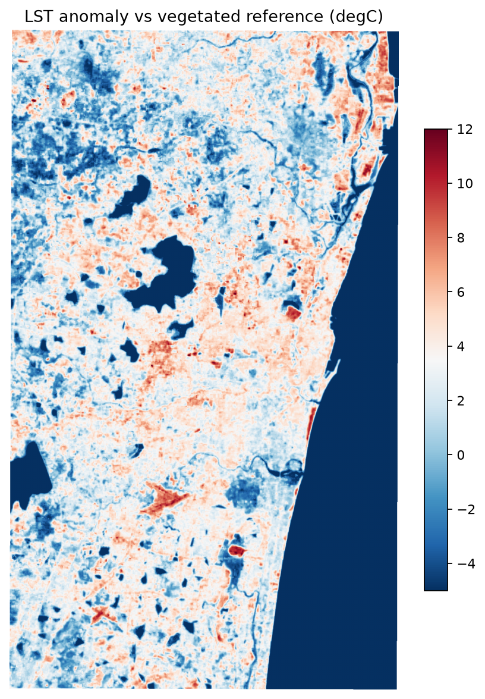
Hotspots — corrected for autocorrelation
The textbook Getis-Ord Gi* test assumes independent pixels; a temperature field is the opposite, so it flagged 79.2 % of land as "significant". We rebuilt the null with phase-randomised surrogate fields — identical power spectrum, random cluster placement (Theiler et al. 1992). The surrogate z-spread (7.88) nearly equals the observed (7.94): the naive result was almost entirely generic smoothness.
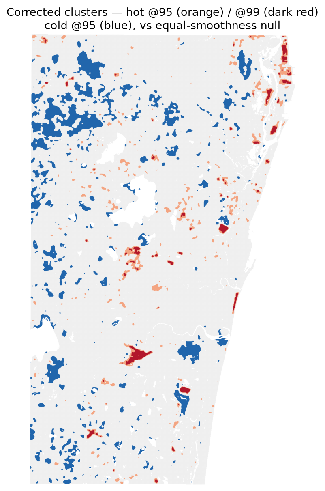
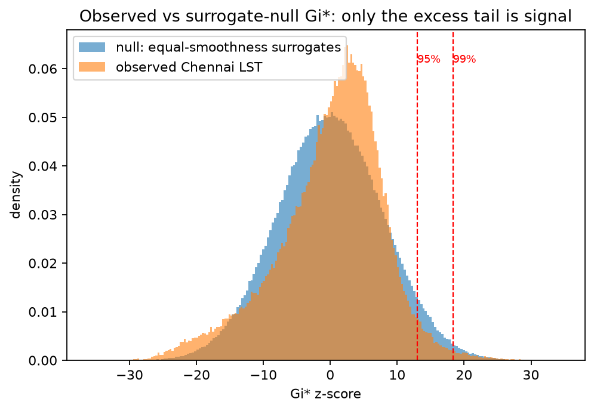
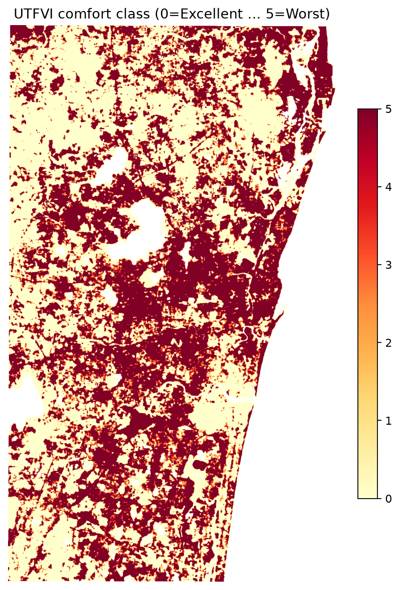
Drivers — and the trap we caught
With sea pixels included, the data says vegetation heats the city (corr +0.51). Remove water and the sign flips to −0.60 — a textbook Simpson's paradox that would have inverted every conclusion. After the fix, SHAP attribution on the constrained model ranks the true drivers:
| rank | driver | mean |SHAP| (°C) | reading |
|---|---|---|---|
| 1 | NDBI (built-up intensity) | 0.971 | dominant, 2.5× the runner-up |
| 2 | NDVI (vegetation) | 0.384 | the main cooling lever |
| 3 | building height (GHSL) | 0.263 | morphology matters |
| 4 | distance to coast | 0.241 | sea-breeze gradient |
| 5 | distance to water | 0.172 | local water cooling |
| 6 | albedo | 0.132 | confounded — see 03 |
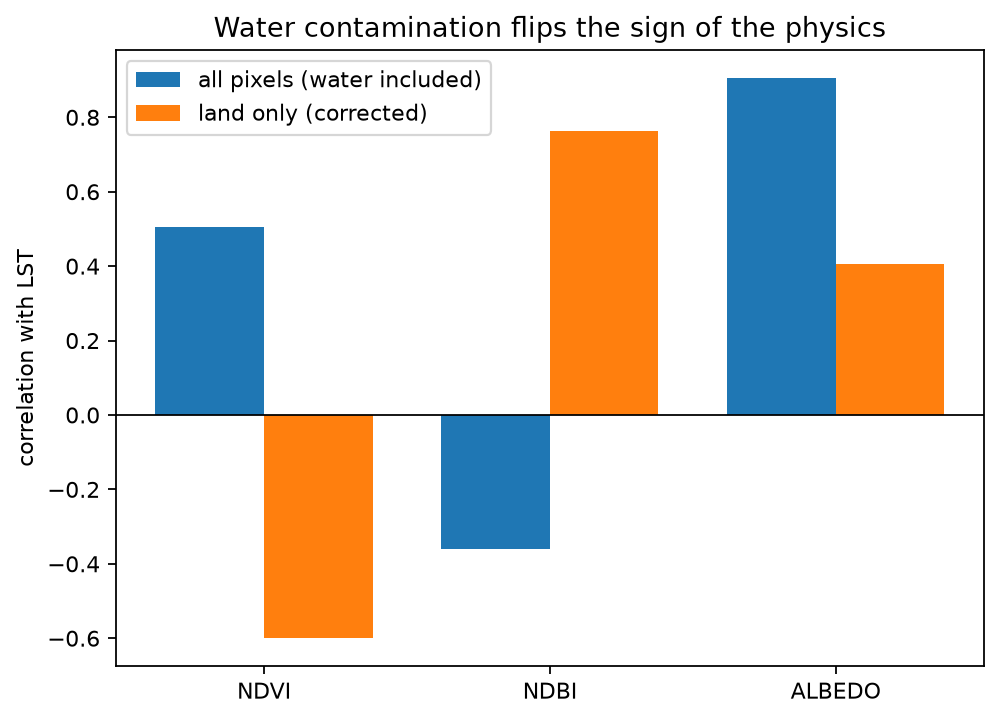
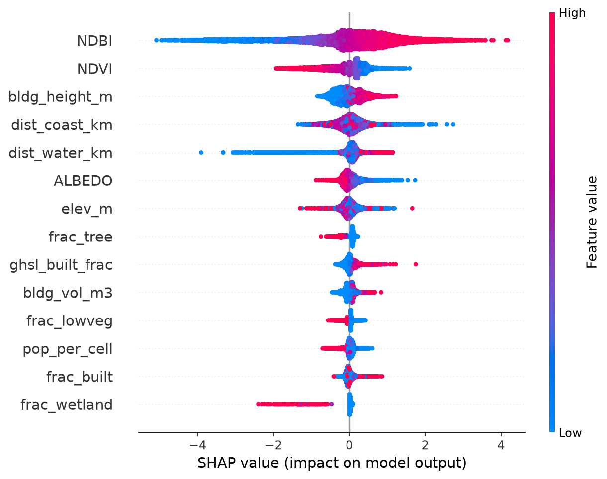
Physics-constrained model
Scenario simulation is a causal question; a purely correlational model can answer it backwards (bright surfaces in Chennai are hot bare ground, so raw ML learns "albedo up → hotter"). We enforce monotone constraints from the surface-energy balance — ∂LST/∂albedo ≤ 0, ∂LST/∂NDVI ≤ 0, likewise tree, low-veg and wetland cover — trading 3 points of R² for guaranteed physical sign on every intervention.
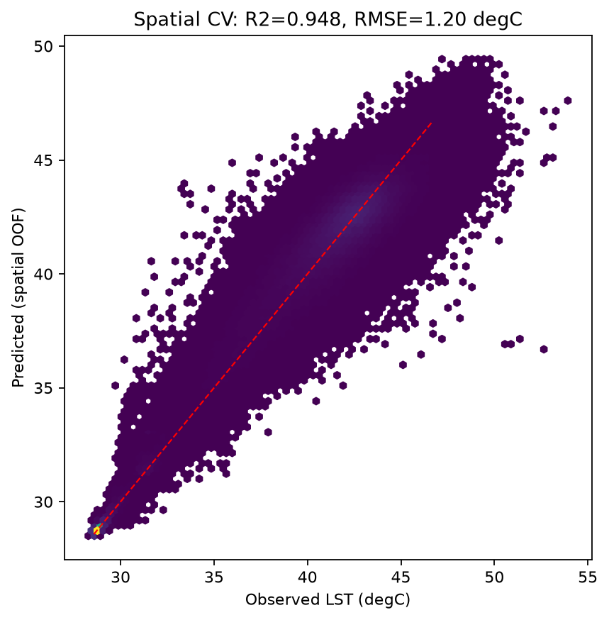
Cooling scenarios
Interventions are feature edits pushed through the constrained model. The albedo edit is capped at 0.45 — inside the observed data range, so no extrapolation. Populations use GHS-POP with mass-conserving rescale.
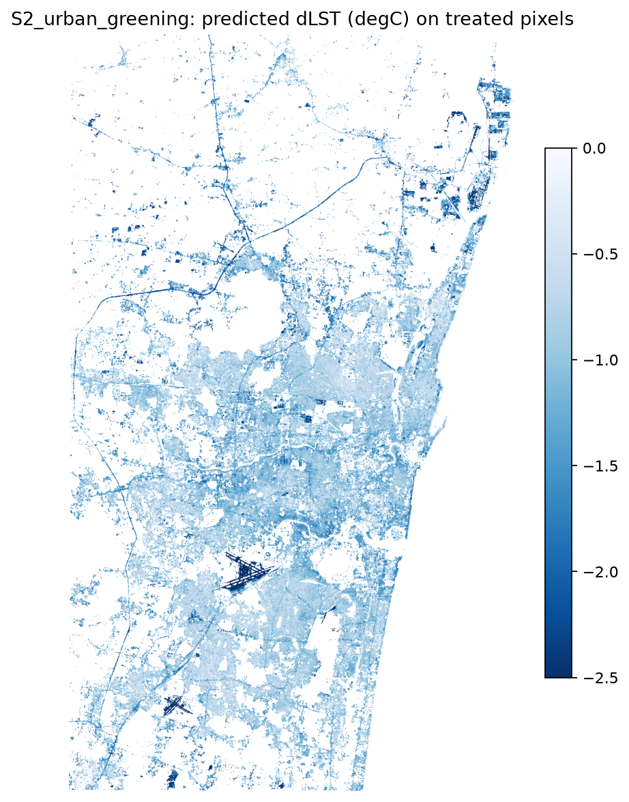
| scenario | treated km² | ΔLST treated | people (corrected) |
|---|---|---|---|
| S1 cool roofs | 526.6 | −0.43 °C | 9.47 M |
| S2 urban greening | 458.4 | −1.09 °C | 8.32 M |
| S3 Ennore wetland | 2.6 | −1.04 °C | 3.9 k |
| S4 airport pavement | 3.6 | −1.14 °C | 11.8 k |
| S5 combined | 552.5 | −1.65 °C | 9.59 M |
Per treated pixel, greening out-cools cool roofs ~2.5× — consistent with the driver ranking (NDVI ≫ albedo). Under S5 the Ennore zone cools −2.61 °C and the airport −4.04 °C.
Optimal placement under budget
Pixels aggregate to 300 m planning cells; each cell chooses {none, roofs, greening, both}. NSGA-II searches the Pareto surface of total cooling × cost × hotspot equity (cooling delivered inside corrected Tier-1 clusters). Cost assumptions — ₹250/m² roof coating, ₹2,500/tree at 150 trees/ha — are config constants, stated and adjustable.
₹ 250 crore → 6.2 M person-°C cooled · marginal value 14 k person-°C per crore
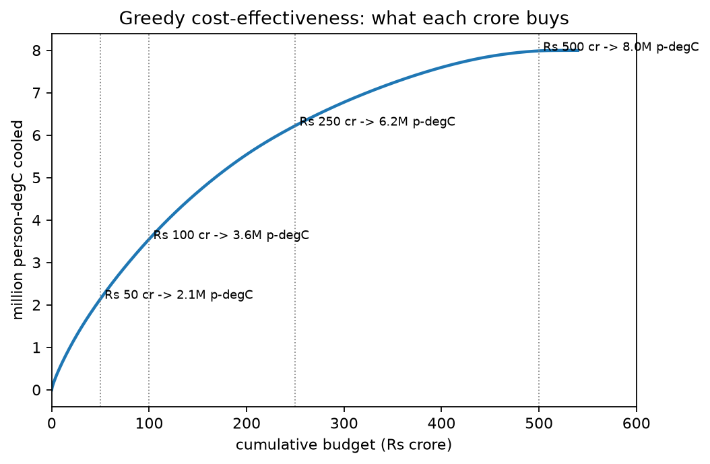
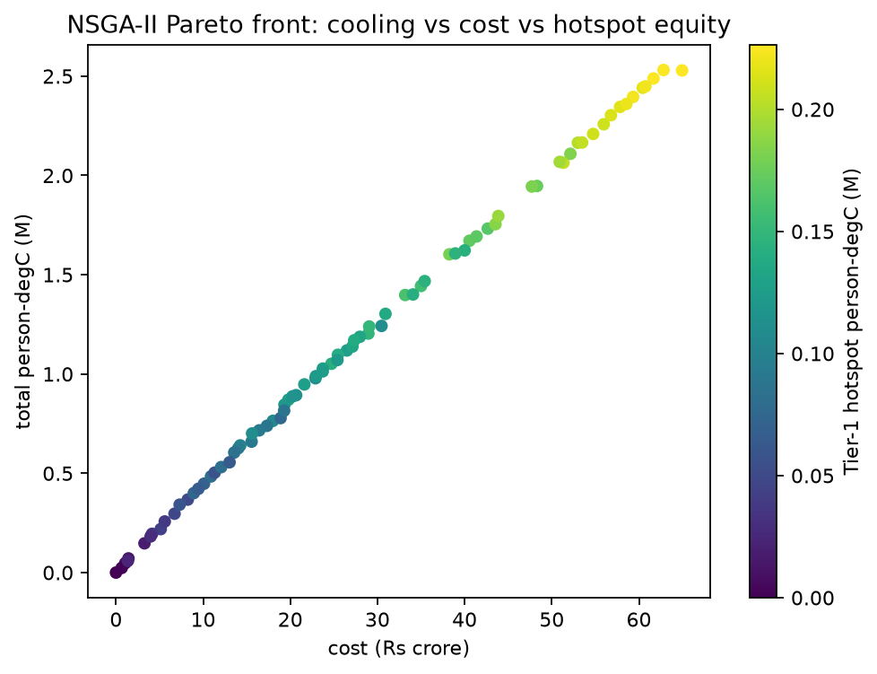
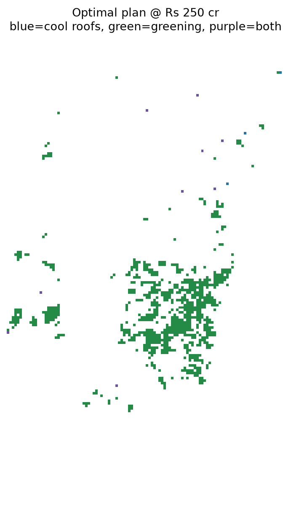
The finding: greening is so cost-dominant that it exhausts eligible land (₹63 cr) before a ₹250 cr budget binds. Policy in one line — green until you run out of plantable cells, then coat roofs in the unplantable core.
Aerospace module
This project is downstream payload exploitation: Landsat TIRS rides a sun-synchronous orbit (fixed 10:30 crossing), ECOSTRESS rides the ISS at 51.6° inclination — a precessing orbit that samples the diurnal cycle Landsat can't. The same radiative-transfer and view-factor physics used here powers spacecraft thermal control; the coming ISRO–CNES TRISHNA mission (~57 m thermal IR) is exactly the sensor this pipeline is built to feed. And at ground level, heat is an aircraft-performance variable:
apron −1.14 °C → near-surface air −0.46 °C → density altitude ≈55 ft recovered · takeoff ground roll ≈0.5 % shorter
Couplings: ΔTair ≈ 0.4 × ΔLST; ~120 ft density altitude and ~1 % ground roll per °C. First-order estimates — refine with runway met data.
Caveats — stated, not hidden
- LST ≠ air temperature. Landsat measures the surface at ~10:30 IST; afternoon peaks and night retention need the ECOSTRESS day/night extension.
- Constrained ≠ fully causal. Monotone constraints guarantee sign, not magnitude; scenario ΔLST should be cross-checked against InVEST / SOLWEIG for pilot wards.
- Cost figures are order-of-magnitude config constants; the greening-saturation finding is robust to them, the exact ₹63 cr is not.
- NSGA-II candidate cap (~1,000 best cells) limits its front to ≈₹65 cr; raise N_CAND to 3000 to span the full budget axis. The greedy curve is city-wide.
- Population uses GHS-POP 2020 with a mass-conserving 100 m→30 m rescale (earlier Phase-6 person-counts were ~11× inflated; corrected here).